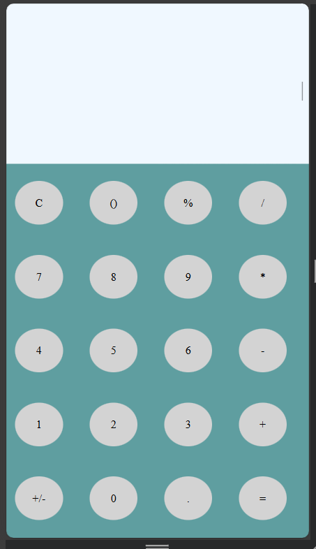
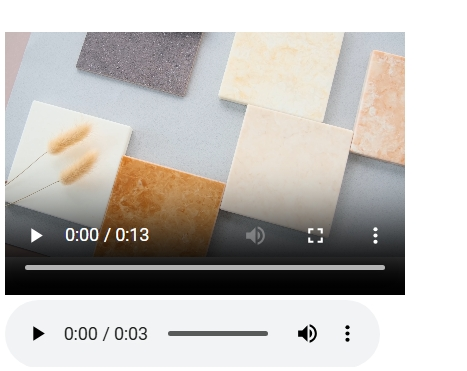
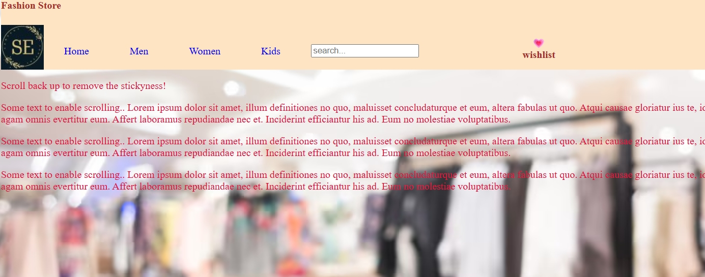
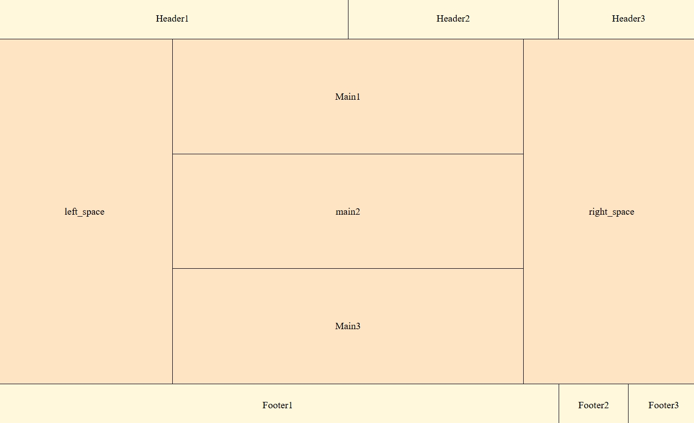
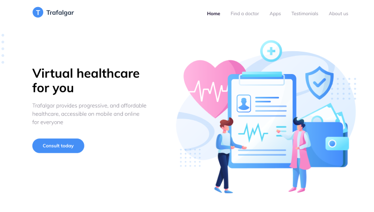
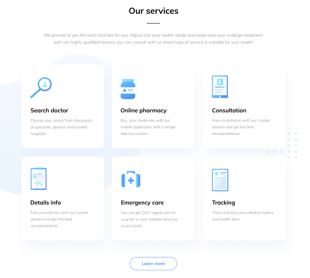
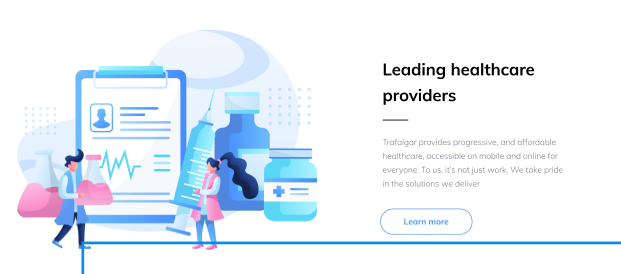
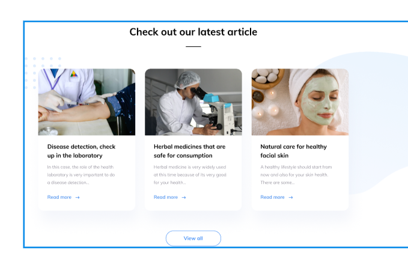
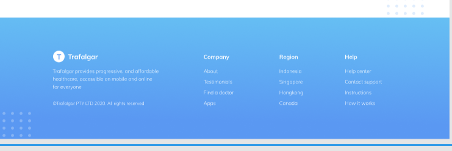

Name: Ekta Kumbhar / Bhavika Dalbanjan
Id: 23BCUOS053 /23BCUOS022
Roll No: BC043 / BC017
Group code: S4
Week 2 Learning Objectives
| Day |
Date |
Learning Objectives |
| MON |
8-DEC |
Enhance styling capabilities with advanced CSS techniques |
| TUE |
9-DEC |
Implement multimedia elements (images, audio, video) with proper optimization |
| WED |
10-DEC |
Advanced positioning and layout techniques |
| THU |
11-DEC |
Advanced flex layout implementation |
| FRI |
12-DEC |
Develop a professional, multi-section website |
Internal Guide
[Prof. Swati Patel]
Assistant Professor,
BCA Department
External Guide
[Mr. Mihir Patwa]
Groovy technoweb Pvt. Ltd.
1. Calculator Application
Project Description: Developed a fully functional calculator interface using HTML and CSS,
featuring a clean and intuitive design suitable for basic arithmetic operations.
Key Features Implemented:
- Digital display screen for input and calculation results
- Grid-based button layout with proper spacing and alignment
- Numeric buttons (0-9) and operation buttons (+, -, ×, ÷)
- Clear (C) and equals (=) functionality buttons
- Responsive design adapting to different screen sizes
- Hover effects for improved user interaction
- apply animations for blinking cursor
Technologies Used: HTML5, CSS3 (Flexbox, Grid)
Learning Outcomes:
- Mastered CSS Grid layout for creating button matrices
- Implemented proper DOM structure for interactive elements
- Applied CSS styling for calculator components including borders, shadows, and colors
- Understood the importance of user interface consistency

Multimedia Integration
2. Working with Media Elements
Audio Integration (A1.mp3):
- Implemented HTML5 audio element with controls
- Learned about audio formats and browser compatibility
- Applied proper accessibility attributes (aria-labels)
- Understood audio file optimization for web delivery
Video Integration (V1.mp4):
- Embedded HTML5 video element with custom controls
- Configured video attributes (autoplay, loop, muted)
- Implemented responsive video sizing
- Learned about video compression and web formats

3. CSS Positioning Practice
Project Description: Two comprehensive projects focused on exploring and understanding
different CSS positioning models and their practical applications in web layouts.
Positioning Models Covered:
- Static Positioning: Default positioning behavior, understanding document flow
- Relative Positioning: Positioning elements relative to their normal position
- Absolute Positioning: Removing elements from document flow and positioning relative to
parent
- Fixed Positioning: Creating elements that stay fixed during scrolling
- Z-Index: Managing stacking context and layer ordering
Technologies Used: HTML5, CSS3 Positioning Properties
Learning Outcomes:
- Gained deep understanding of CSS positioning models
- Learned when to use each positioning type appropriately
- Mastered z-index and stacking context management
- Practiced creating complex layouts with positioned elements

4. CSS Flexbox Layout Project
Description: A complete webpage wireframe created using CSS Flexbox.
The layout includes multiple headers, a multi-level main content section, side spacing areas,
and a structured footer — all arranged using flex containers.
Flexbox Concepts Practiced:
- Flex direction for vertical and horizontal stacking
- Justify-content and align-items for spacing and alignment
- Flex-grow and flex-shrink to control element sizing
- Nested flex containers for arranging inner blocks
- Creating responsive structure using flexible side spaces
Layout Sections Included:
- Header Row: Header1, Header2, Header3 aligned horizontally
- Main Area: Main1, main2, Main3 arranged vertically with side spaces (left_space,
right_space)
- Footer Row: Footer1, Footer2, Footer3 aligned horizontally
Technologies Used: HTML5, CSS3 Flexbox
Learning Outcomes:
- Built a complete page layout using pure Flexbox
- Improved control over spacing, alignment, and structure
- Understood how to design complex multi-section layouts
- Practiced responsive behaviour using flexible containers

5. professional Website
Project Overview: The centerpiece of Week 2 was the development of a comprehensive,
professional website that integrates all skills and techniques learned during the first two weeks of the
internship. This project represents a significant milestone, demonstrating the ability to create
production-ready web applications.
Website Structure and Features:
- Navigation Bar: Professional header with logo, navigation menu, and responsive design
- Hero Section: Eye-catching landing area with headline, subheading, and call-to-action
button
- Features Section: Grid-based layout showcasing key features with icons and descriptions
- About Section: Content area with image integration and detailed information
- Services Section: Service cards with icons, titles, and descriptions
- Footer: Complete with contact information, social media links, and copyright
Technical Implementation:
- Semantic HTML5 structure for improved accessibility and SEO
- Advanced CSS3 styling with custom properties and animations
- Flexbox and Grid layouts for responsive design
- Font Awesome icon integration (version 6.0+)
- Responsive meta viewport configuration
- Custom color scheme and typography system
- Smooth scroll behavior and hover effects
- Mobile-first responsive design approach
Technology Stack:
- HTML5: Semantic markup, meta tags, structured content
- CSS3: Flexbox, Grid, transitions, transforms, custom properties
- Font Awesome: Icon library via CDN (6.0+)
- Google Fonts: Custom typography (if applicable)
- Responsive Design: Mobile-first approach with breakpoints





Professional website structure
External resource integration
Multimedia element handling
Advanced responsive design
CSS animations and transitions
Icon library integration
Asset optimization
Modern CSS architecture
Complete project workflow
Professional UI/UX patterns
Weekly Progress Metrics
HTML/CSS Proficiency:
Responsive Design:
Professional Development
Beyond technical skills, Week 2 fostered important professional competencies:
- Project Management: Planning and executing a complex multi-section website
- Time Management: Balancing multiple tasks and meeting project milestones
- Problem-Solving: Researching solutions independently and applying new techniques
- Attention to Detail: Ensuring pixel-perfect designs and consistent styling
- Code Organization: Maintaining clean, commented, and structured code
- Self-Learning: Exploring documentation and tutorials for external libraries
Conclusion
advancing from basic skills to professional-level web development capabilities. The completion of a
comprehensive, responsive website demonstrates readiness to work on real-world projects. The integration of
external resources, multimedia elements, and advanced CSS techniques showcases adaptability and willingness to
learn new technologies.
The two-week period has provided a solid foundation in front-end web development, with practical experience
across HTML5, CSS3, responsive design, and professional website architecture. Moving forward, the addition of
JavaScript programming will enable the creation of fully interactive web applications, representing the next
exciting phase of development.